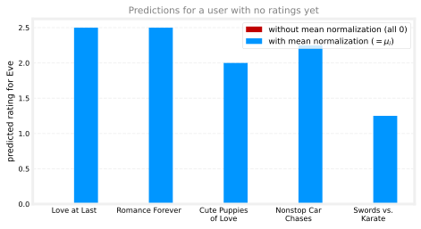
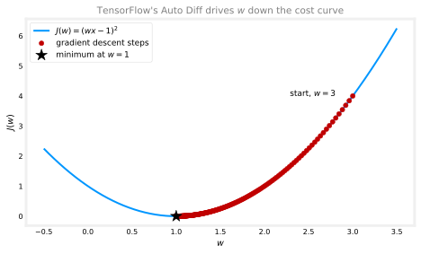

Collaborative Filtering in Practice
machine-learning
unsupervised-learning
Making collaborative filtering work: mean normalization for brand-new users, implementing the algorithm in TensorFlow with Auto Diff and the Adam optimizer, finding related items from learned features, the limitations that motivate content-based filtering, and a practice lab building a movie recommender on the MovieLens dataset.
The previous page built the collaborative filtering algorithm: a cost function \(J(\vec{w}, b, \vec{x})\) over the observed movie ratings, minimized over the per-user parameters \(\vec{w}^{(j)}, b^{(j)}\) and the per-movie features \(\vec{x}^{(i)}\) all at once. This page is about making it work well in practice: a normalization trick that fixes the algorithm’s embarrassing behavior on brand-new users, an actual TensorFlow implementation, and a bonus use of the learned features, finding related items, before closing with the limitations that motivate the next algorithm.
Mean Normalization
Back in the first course, feature scaling helped linear regression run faster by putting all the features on a comparable scale. Collaborative filtering has its own version of this trick. With ratings that range over numbers like 0 to 5 stars, the algorithm runs a bit more efficiently, and, more importantly, makes much more sensible predictions for brand-new users, if the ratings are first mean normalized so that each movie’s ratings average out to zero.
To see why this matters, take the ratings table from the previous page and add a fifth user, Eve, who has not rated any movies yet:
| Movie | Alice (1) | Bob (2) | Carol (3) | Dave (4) | Eve (5) |
|---|---|---|---|---|---|
| Love at Last | ★★★★★ 5 | ★★★★★ 5 | ☆☆☆☆☆ 0 | ☆☆☆☆☆ 0 | ? |
| Romance Forever | ★★★★★ 5 | ? | ? | ☆☆☆☆☆ 0 | ? |
| Cute Puppies of Love | ? | ★★★★☆ 4 | ☆☆☆☆☆ 0 | ? | ? |
| Nonstop Car Chases | ☆☆☆☆☆ 0 | ☆☆☆☆☆ 0 | ★★★★★ 5 | ★★★★☆ 4 | ? |
| Swords vs. Karate | ☆☆☆☆☆ 0 | ☆☆☆☆☆ 0 | ★★★★★ 5 | ☆☆☆☆☆ 0 | ? |
What would the algorithm, as built so far, predict for Eve? Something unhelpful. Because Eve has rated nothing, none of the squared-error terms in the cost function involve her parameters \(\vec{w}^{(5)}, b^{(5)}\) at all, the only place they appear is the regularization term, which pulls \(\vec{w}^{(5)}\) toward zero. So minimizing the cost gives \(\vec{w}^{(5)} = (0, 0)\), and since \(b\) is not regularized but is initialized to 0 by default, most likely \(b^{(5)} = 0\) too. The prediction for every movie \(i\) is then
\[ \hat{y}(i, 5) = \vec{w}^{(5)} \cdot \vec{x}^{(i)} + b^{(5)} = 0 \]
The algorithm predicts Eve will rate every single movie zero stars, which is not a reasonable guess about a person just because they have not rated anything yet.
Mean normalization fixes this. First, take all of the values in the table, question marks included, and write them out as a two-dimensional matrix, one row per movie and one column per user, just a more compact way of holding exactly the same ratings:
\[ Y = \begin{bmatrix} 5 & 5 & 0 & 0 & ? \\ 5 & ? & ? & 0 & ? \\ ? & 4 & 0 & ? & ? \\ 0 & 0 & 5 & 4 & ? \\ 0 & 0 & 5 & 0 & ? \end{bmatrix} \]
To carry out mean normalization, go through this matrix row by row and, for each movie, compute the average of the ratings it actually received. Movie 1 got two 5s and two 0s, so its average is 2.5; movie 2 got a 5 and a 0, also 2.5; movie 3 averages 2; movie 4 averages 2.25; and movie 5, not that popular, got 0, 0, 5, and 0, averaging \(5/4 = 1.25\). Stack these averages into a vector
\[ \vec{\mu} = \begin{pmatrix} 2.5 \\ 2.5 \\ 2 \\ 2.25 \\ 1.25 \end{pmatrix} \]
and subtract each movie’s mean \(\mu_i\) from every rating of that movie. The question marks stay question marks, only real ratings get shifted:
| Movie (\(\mu_i\)) | Alice (1) | Bob (2) | Carol (3) | Dave (4) | Eve (5) |
|---|---|---|---|---|---|
| Love at Last (2.5) | 2.5 | 2.5 | \(-2.5\) | \(-2.5\) | ? |
| Romance Forever (2.5) | 2.5 | ? | ? | \(-2.5\) | ? |
| Cute Puppies of Love (2) | ? | 2 | \(-2\) | ? | ? |
| Nonstop Car Chases (2.25) | \(-2.25\) | \(-2.25\) | 2.75 | 1.75 | ? |
| Swords vs. Karate (1.25) | \(-1.25\) | \(-1.25\) | 3.75 | \(-1.25\) | ? |
These shifted values become the new \(y(i,j)\) that the algorithm trains on, as if Alice had given movie 1 a 2.5 and movie 4 a \(-2.25\). Learning \(\vec{w}^{(j)}, b^{(j)}, \vec{x}^{(i)}\) proceeds exactly as before. The only other change comes at prediction time: since \(\mu_i\) was subtracted out of movie \(i\)’s ratings before training, it has to be added back to get an actual star rating (otherwise the model could predict negative stars, which is impossible on a 0-to-5 scale):
\[ \hat{y}(i, j) = \vec{w}^{(j)} \cdot \vec{x}^{(i)} + b^{(j)} + \mu_i \]
Now look at what this does for Eve. Her parameters still come out as \(\vec{w}^{(5)} = (0,0)\) and \(b^{(5)} = 0\), but the prediction for movie 1 becomes \(0 + \mu_1 = 2.5\). In fact, every one of Eve’s predicted ratings is simply \(\mu_i\), the average of what other users gave that movie, which is a far more reasonable starting guess for someone the system knows nothing about than a wall of zeros.
One design choice worth noting: this normalized the rows of the matrix (per movie), which helps with a new user. The alternative, normalizing the columns (per user), would instead help with a brand-new movie that nobody has rated. Row normalization is the more important of the two here: a reasonable default guess for a new user is genuinely useful, whereas a movie nobody has rated probably should not be shown to many users yet anyway. Normalizing just the rows works fine in practice, and it is what the practice lab uses.
Review Questions
1. Without mean normalization, why does the algorithm predict a new user will rate every movie 0 stars?
TipAnswer
A user with no ratings contributes nothing to the squared-error part of the cost function, so their parameters only appear in the regularization term, which pushes \(\vec{w}^{(j)}\) to \((0, \dots, 0)\); with \(b^{(j)}\) initialized to 0 and never pulled anywhere else, it stays 0 too. The prediction \(\vec{w}^{(j)} \cdot \vec{x}^{(i)} + b^{(j)}\) is then 0 for every movie.
1. Describe the two changes mean normalization makes to the algorithm, one before training and one at prediction time.
TipAnswer
Before training, compute each movie’s average rating \(\mu_i\) (over only the users who rated it) and subtract it from that movie’s ratings, then train on the shifted values. At prediction time, add \(\mu_i\) back: \(\hat{y}(i,j) = \vec{w}^{(j)} \cdot \vec{x}^{(i)} + b^{(j)} + \mu_i\), so predictions land back on the real 0-to-5 star scale.
1. Rows or columns: which does this section normalize, and what would normalizing the other one help with instead?
TipAnswer
It normalizes the rows, one mean per movie, which gives sensible default predictions for a new user who has rated nothing (they get each movie’s average). Normalizing the columns, one mean per user, would instead help with a brand-new movie nobody has rated, a less important case since an unrated movie probably should not be pushed to many users yet anyway.
1. The lecture described using “mean normalization” to do feature scaling of the ratings. Which equation below best describes this algorithm?
A. \[ y_{\text{norm}}(i,j) = \frac{y(i,j) - \mu_i}{\max_i - \min_i} \quad \text{where} \quad \mu_i = \frac{1}{\sum_j r(i,j)} \sum_{j\,:\,r(i,j)=1} y(i,j) \]
B. \[ y_{\text{norm}}(i,j) = \frac{y(i,j) - \mu_i}{\sigma_i} \quad \text{where} \quad \mu_i = \frac{1}{\sum_j r(i,j)} \sum_{j\,:\,r(i,j)=1} y(i,j), \quad \sigma_i^2 = \frac{1}{\sum_j r(i,j)} \sum_{j\,:\,r(i,j)=1} \big(y(i,j) - \mu_i\big)^2 \]
C. \[ y_{\text{norm}}(i,j) = y(i,j) - \mu_i \quad \text{where} \quad \mu_i = \frac{1}{\sum_j r(i,j)} \sum_{j\,:\,r(i,j)=1} y(i,j) \]
TipAnswer
C. Mean normalization as used here only subtracts each movie’s mean \(\mu_i\) (computed over just the users who rated it, that is the \(\frac{1}{\sum_j r(i,j)}\) factor), producing a zero average value on a per-row basis, with nothing in the denominator. Option A is min-max scaling and option B is z-score standardization, both real feature scaling techniques from the first course, but not what the lecture described for ratings.
Implementing It in TensorFlow
TensorFlow is usually thought of as a tool for building neural networks, and it is, but it is also very useful for implementing other learning algorithms, collaborative filtering included. The reason is a feature called automatic differentiation (Auto Diff for short, and sometimes informally called Auto Grad, though technically Autograd is the name of one specific software package for it). Gradient descent needs the derivatives of the cost function, and deriving them by hand takes calculus. With Auto Diff, the only thing that needs writing is the cost function itself, and TensorFlow works out all the derivatives automatically.
Here is the idea on a tiny example first. Take a single parameter \(w\), a model \(f(x) = wx\) with \(b = 0\), one training example \(x = 1, y = 1\), and the cost \(J = (wx - y)^2\). The gradient descent update is the familiar
\[ w \leftarrow w - \alpha \frac{\partial}{\partial w} J(w) \]
and the TensorFlow version of it looks like this, with the new functions doing all the work marked on the numbered lines:
import tensorflow as tf
1w = tf.Variable(3.0)
x, y, alpha = 1.0, 1.0, 0.01
iterations = 500
w_history = [w.numpy()]
for iter in range(iterations):
2 with tf.GradientTape() as tape:
fwb = w * x
costJ = (fwb - y) ** 2
3 [dJdw] = tape.gradient(costJ, [w])
4 w.assign_add(-alpha * dJdw)
w_history.append(w.numpy())
print(f"w after {iterations} iterations: {w.numpy():.3f}")- 1
-
tf.Variablecreates the parameter \(w\), initialized to 3.0. Declaring it a variable is how TensorFlow is told this is a parameter to optimize. - 2
-
tf.GradientTapeis the key piece: inside this block, TensorFlow records the sequence of operations used to computecostJonto the “tape,” which is what makes automatic differentiation possible. - 3
-
tape.gradientplays the tape back to compute the derivative \(\frac{\partial J}{\partial w}\) automatically, no calculus required. - 4
-
assign_addperforms the update \(w \leftarrow w - \alpha \frac{\partial J}{\partial w}\). TensorFlow variables need slightly special handling, which is why it is not written as plainw = w - ....
w after 500 iterations: 1.000
Each red dot is one update, sliding down the cost curve from \(w = 3\) to the minimum at \(w = 1\): big steps at first where the curve is steep, smaller and smaller ones as the slope flattens near the bottom. (The course slide runs only 30 iterations, but with this small learning rate that stops around \(w \approx 2.1\), so the loop here runs 500 to actually converge.) And all of it without ever writing down the derivative \(\frac{\partial J}{\partial w}\) by hand.
Adam and the Full Algorithm
Once derivatives come for free, there is no need to stop at plain gradient descent. A more powerful optimizer like Adam works with the exact same gradient tape. For collaborative filtering, the recipe is: write the combined cost function \(J\) from the previous page as code, taking the parameters \(\mathbf{X}, \mathbf{W}, \vec{b}\), the mean-normalized ratings, the matrix \(R\) of which pairs are rated, and \(\lambda\), then let TensorFlow differentiate it and let Adam apply the updates. Here it is running end to end on the toy ratings table, Eve included:
movie_names = ["Love at Last", "Romance Forever", "Cute Puppies of Love",
"Nonstop Car Chases", "Swords vs. Karate"]
Y = np.array([
[5, 5, 0, 0, np.nan],
[5, np.nan, np.nan, 0, np.nan],
[np.nan, 4, 0, np.nan, np.nan],
[0, 0, 5, 4, np.nan],
[0, 0, 5, 0, np.nan],
])
R = (~np.isnan(Y)).astype(float) # r(i,j): 1 where a rating exists
mu = np.nanmean(Y, axis=1, keepdims=True) # per-movie means, the vector mu
Ynorm = np.where(R == 1, Y - mu, 0) # mean-normalized ratings
num_movies, num_users = Y.shape
num_features = 2
1def cofi_cost_func(X, W, b, Ynorm, R, lambda_):
err = (tf.linalg.matmul(X, tf.transpose(W)) + b - Ynorm) * R
return (0.5 * tf.reduce_sum(err ** 2)
+ (lambda_ / 2) * (tf.reduce_sum(X ** 2) + tf.reduce_sum(W ** 2)))
tf.random.set_seed(1234)
W = tf.Variable(tf.random.normal((num_users, num_features), stddev=0.1))
X = tf.Variable(tf.random.normal((num_movies, num_features), stddev=0.1))
b = tf.Variable(tf.zeros((1, num_users)))
2optimizer = tf.keras.optimizers.Adam(learning_rate=1e-1)
lambda_ = 0.1
for iter in range(200):
3 with tf.GradientTape() as tape:
cost_value = cofi_cost_func(X, W, b, Ynorm, R, lambda_)
4 grads = tape.gradient(cost_value, [X, W, b])
5 optimizer.apply_gradients(zip(grads, [X, W, b]))
print(f"final cost: {cost_value.numpy():.4f}")- 1
-
cofi_cost_funcis the collaborative filtering cost function \(J\) written as code, the one piece the programmer has to supply. Everything else is TensorFlow machinery. - 2
-
tf.keras.optimizers.Adamcreates the optimizer object, with its learning rate. From here on it manages every parameter update. - 3
-
tf.GradientTaperecords the operations used to compute the cost, exactly as in the tiny example, just with a bigger cost function. - 4
-
tape.gradientreturns the gradients of the cost with respect to \(\mathbf{X}\), \(\mathbf{W}\), and \(\vec{b}\), all three at once. - 5
-
optimizer.apply_gradientshands the gradients to Adam to update the variables (zipis just plain Python, rearranging the gradients and variables into the pairsapply_gradientsexpects).
final cost: 1.1480The training loop has the same three beats as the tiny example: compute the cost inside a gradient tape, ask the tape for the gradients, and hand them to the optimizer. After training, predictions are \(\vec{w}^{(j)} \cdot \vec{x}^{(i)} + b^{(j)} + \mu_i\):
import pandas as pd
pred = (tf.linalg.matmul(X, tf.transpose(W)) + b).numpy() + mu
pd.DataFrame(np.round(pred, 1) + 0.0, index=movie_names, # + 0.0 turns -0.0 into 0.0
columns=["Alice", "Bob", "Carol", "Dave", "Eve"])| Alice | Bob | Carol | Dave | Eve | |
|---|---|---|---|---|---|
| Love at Last | 5.0 | 5.0 | 0.0 | 0.0 | 2.5 |
| Romance Forever | 4.9 | 4.9 | 0.3 | 0.0 | 2.5 |
| Cute Puppies of Love | 4.0 | 4.0 | 0.0 | 0.1 | 2.0 |
| Nonstop Car Chases | 0.0 | 0.0 | 5.0 | 3.9 | 2.3 |
| Swords vs. Karate | 0.0 | 0.0 | 4.9 | 0.0 | 1.3 |
Three things worth reading off this table. The rated entries are reproduced almost exactly. The question marks from the original table have been filled in with sensible predictions, Bob’s unrated Romance Forever comes out around 4.9 and Alice’s unrated Cute Puppies of Love around 4.0, matching the guesses made by eye when the ratings table was first introduced, and that filling-in is exactly what a recommender system is for. And Eve’s column lands on the per-movie means \(\vec{\mu}\), the mean-normalization behavior worked out above, now confirmed by running code.
Why not the usual Sequential / model.compile / model.fit recipe from the neural network pages? Because collaborative filtering does not fit it: its cost function is not a stack of dense layers or any other standard layer type, so there is no model to compile. The gradient tape approach is the general-purpose fallback, implement the cost function yourself, and TensorFlow still supplies the derivatives and the optimizer. The practice lab for this section uses exactly this pattern on the MovieLens dataset (due to Harper and Konstan), real movies rated by real people. (PyTorch, among other packages, offers the same Auto Diff capability.)
Review Questions
1. What does TensorFlow’s gradient tape do, and what is the one piece of code the programmer still has to supply?
TipAnswer
Inside a with tf.GradientTape() as tape: block, TensorFlow records the sequence of operations used to compute the cost, and tape.gradient then uses that recording to compute the derivatives of the cost with respect to any variables automatically (Auto Diff). The programmer only has to supply the cost function itself, no derivatives, no calculus.
1. Which three sets of variables does tape.gradient differentiate the collaborative filtering cost with respect to, and what happens to those gradients next?
TipAnswer
The features \(\mathbf{X}\), the user weights \(\mathbf{W}\), and the biases \(\vec{b}\), the same three sets of parameters the combined cost function is minimized over. The gradients are handed to the optimizer via optimizer.apply_gradients(zip(grads, [X, W, b])), which applies the update, here using Adam rather than plain gradient descent.
1. Why can’t collaborative filtering be trained with the standard model.compile and model.fit workflow?
TipAnswer
That workflow assumes the model is built from TensorFlow’s standard layer types, like a sequence of dense layers. The collaborative filtering model and cost function do not fit any of those layer types, so instead the cost function is implemented directly, and TensorFlow’s Auto Diff plus an optimizer like Adam do the rest.
1. The implementation of collaborative filtering utilized a custom training loop in TensorFlow. Is it true that TensorFlow always requires a custom training loop?
TipAnswer
No: TensorFlow provides simplified training operations for some applications. The model, compile, fit sequence from the neural network pages manages training automatically whenever the model fits TensorFlow’s standard layer paradigm. A custom training loop was used here because training \(\vec{w}\), \(b\), and \(\vec{x}\) together does not fit that paradigm (there are alternate solutions, such as custom layers, but the custom loop is a useful general-purpose tool to know).
Lab: Movie Recommendations with Collaborative Filtering
This lab builds a working movie recommender on real data: the MovieLens “ml-latest-small” dataset (due to Harper and Konstan, 2015), reduced here to \(n_m = 4778\) movies rated by \(n_u = 443\) users, with ratings from 0.5 to 5 in half-star steps. The two graded pieces are the collaborative filtering cost function, first with loops and then vectorized, after which the model trains with exactly the custom training loop from this page, learns 100 features per movie, and produces personal recommendations from ratings you enter yourself.
import pandas as pd
import tensorflow as tf
from tensorflow import keras
from numpy import loadtxtDataset
The ratings live in the same two matrices used throughout this page, \(Y\) (\(n_m \times n_u\), with 0 standing in for “not rated”) and \(R\) (1 where a rating exists), just much bigger than the toy 5-movie version. The dataset also ships a set of pre-computed parameters \(\mathbf{X}\), \(\mathbf{W}\), \(\vec{b}\), trained values provided so the cost function can be tested against known numbers before any training happens.
data_dir = "../../media/collaborative-filtering"
X = loadtxt(f"{data_dir}/small_movies_X.csv", delimiter=",")
W = loadtxt(f"{data_dir}/small_movies_W.csv", delimiter=",")
b = loadtxt(f"{data_dir}/small_movies_b.csv", delimiter=",").reshape(1, -1)
Y = loadtxt(f"{data_dir}/small_movies_Y.csv", delimiter=",")
R = loadtxt(f"{data_dir}/small_movies_R.csv", delimiter=",")
num_movies, num_features = X.shape
num_users = W.shape[0]
print("Y", Y.shape, "R", R.shape)
print("X", X.shape)
print("W", W.shape)
print("b", b.shape)
print("num_features", num_features)
print("num_movies", num_movies)
print("num_users", num_users)Y (4778, 443) R (4778, 443)
X (4778, 10)
W (443, 10)
b (1, 443)
num_features 10
num_movies 4778
num_users 443A quick statistic straight off the matrix, using \(R\) as a mask so unrated entries do not drag the average down:
tsmean = np.mean(Y[0, R[0, :].astype(bool)])
print(f"Average rating for movie 1 : {tsmean:0.3f} / 5")Average rating for movie 1 : 3.400 / 5The expected average is 3.400, and that is what comes out.
Exercise 1: Cost Function with Loops
The graded function cofi_cost_func computes
\[ J = \frac{1}{2} \sum_{(i,j)\,:\,r(i,j)=1} \left( \vec{w}^{(j)} \cdot \vec{x}^{(i)} + b^{(j)} - y(i,j) \right)^2 + \frac{\lambda}{2} \sum_{j} \sum_{k} \left(w_k^{(j)}\right)^2 + \frac{\lambda}{2} \sum_{i} \sum_{k} \left(x_k^{(i)}\right)^2 \]
written first with explicit loops over users and movies, so the code lines up one-to-one with the summation signs, multiplying each squared error by \(r(i,j)\) instead of skipping unrated pairs:
def cofi_cost_func(X, W, b, Y, R, lambda_):
"""
Returns the cost for the collaborative filtering model
Args:
X (ndarray (num_movies, num_features)): matrix of item features
W (ndarray (num_users, num_features)) : matrix of user parameters
b (ndarray (1, num_users)) : vector of user parameters
Y (ndarray (num_movies, num_users)) : matrix of user ratings of movies
R (ndarray (num_movies, num_users)) : matrix, where R(i,j) = 1 if movie i was rated by user j
lambda_ (float): regularization parameter
Returns:
J (float) : Cost
"""
nm, nu = Y.shape
J = 0
for j in range(nu):
w = W[j, :]
b_j = b[0, j]
for i in range(nm):
x = X[i, :]
y = Y[i, j]
r = R[i, j]
J += r * np.square(np.dot(w, x) + b_j - y)
J = J / 2
J += (lambda_ / 2) * (np.sum(np.square(W)) + np.sum(np.square(X)))
return JBecause the double loop is slow, the check runs on a small slice of the data, 5 movies, 4 users, 3 features, first without regularization and then with \(\lambda = 1.5\):
num_users_r = 4
num_movies_r = 5
num_features_r = 3
X_r = X[:num_movies_r, :num_features_r]
W_r = W[:num_users_r, :num_features_r]
b_r = b[0, :num_users_r].reshape(1, -1)
Y_r = Y[:num_movies_r, :num_users_r]
R_r = R[:num_movies_r, :num_users_r]
J = cofi_cost_func(X_r, W_r, b_r, Y_r, R_r, 0)
print(f"Cost: {J:0.2f}")
J = cofi_cost_func(X_r, W_r, b_r, Y_r, R_r, 1.5)
print(f"Cost (with regularization): {J:0.2f}")Cost: 13.67
Cost (with regularization): 28.09The expected values are 13.67 without regularization and 28.09 with it, both matched. The lab’s public tests probe the same function with hand-constructed matrices of ones and zeros, where the correct cost can be worked out on paper:
X_t = np.ones((5, 3)); W_t = np.ones((4, 3)); b_t = np.zeros((1, 4))
Y_t = np.zeros((5, 4)); R_t = np.zeros((5, 4))
assert np.isclose(cofi_cost_func(X_t, W_t, b_t, Y_t, R_t, 2), 27), \
"Check the regularization term (did you multiply by lambda_?)"
b_t = np.ones((1, 4)); Y_t = np.ones((5, 4)); R_t = np.ones((5, 4))
assert np.isclose(cofi_cost_func(X_t, W_t, b_t, Y_t, R_t, 0), 90), \
"Check the term without regularization"
Y_t = np.zeros((5, 4))
assert np.isclose(cofi_cost_func(X_t, W_t, b_t, Y_t, R_t, 0), 160), \
"Check the term without regularization"
print("All tests passed!")All tests passed!Vectorized Cost Function
The loop version is far too slow for training on the full dataset, and, written in plain NumPy loops, it also would not slot into TensorFlow’s gradient tape. The vectorized version below computes the identical cost as one matrix expression, all predictions at once via \(\mathbf{X}\mathbf{W}^T + \vec{b}\), masked by \(R\), using TensorFlow operations so tf.GradientTape can record it. It is the same cofi_cost_func used with the toy dataset earlier on this page.
def cofi_cost_func_v(X, W, b, Y, R, lambda_):
"""
Returns the cost for the collaborative filtering model.
Vectorized for speed. Uses tensorflow operations to be
compatible with a custom training loop.
"""
j = (tf.linalg.matmul(X, tf.transpose(W)) + b - Y) * R
J = 0.5 * tf.reduce_sum(j**2) + (lambda_ / 2) * (tf.reduce_sum(X**2) + tf.reduce_sum(W**2))
return J
J = cofi_cost_func_v(X_r, W_r, b_r, Y_r, R_r, 0)
print(f"Cost: {J:0.2f}")
J = cofi_cost_func_v(X_r, W_r, b_r, Y_r, R_r, 1.5)
print(f"Cost (with regularization): {J:0.2f}")Cost: 13.67
Cost (with regularization): 28.09Same 13.67 and 28.09 as the loop version, so the two implementations agree.
Adding Your Own Ratings
Here is the part that makes the lab fun: enter ratings for movies you have opinions about, and the recommender will treat you as a new user. The file small_movie_list.csv maps each row index of \(Y\) to a movie title. The ratings below are the lab’s example selections:
movieList_df = pd.read_csv(f"{data_dir}/small_movie_list.csv",
header=0, index_col=0, delimiter=",", quotechar='"')
movieList = movieList_df["title"].to_list()
my_ratings = np.zeros(num_movies)
my_ratings[2700] = 5 # Toy Story 3 (2010)
my_ratings[2609] = 2 # Persuasion (2007)
my_ratings[929] = 5 # Lord of the Rings: The Return of the King, The
my_ratings[246] = 5 # Shrek (2001)
my_ratings[2716] = 3 # Inception
my_ratings[1150] = 5 # Incredibles, The (2004)
my_ratings[382] = 2 # Amelie (Fabuleux destin d'Amélie Poulain, Le)
my_ratings[366] = 5 # Harry Potter and the Sorcerer's Stone (2001)
my_ratings[622] = 5 # Harry Potter and the Chamber of Secrets (2002)
my_ratings[988] = 3 # Eternal Sunshine of the Spotless Mind (2004)
my_ratings[2925] = 1 # Louis Theroux: Law & Disorder (2008)
my_ratings[2937] = 1 # Nothing to Declare (Rien à déclarer)
my_ratings[793] = 5 # Pirates of the Caribbean: The Curse of the Black Pearl (2003)
my_rated = [i for i in range(len(my_ratings)) if my_ratings[i] > 0]
print("New user ratings:\n")
for i in range(len(my_ratings)):
if my_ratings[i] > 0:
print(f"Rated {my_ratings[i]} for {movieList_df.loc[i, 'title']}")New user ratings:
Rated 5.0 for Shrek (2001)
Rated 5.0 for Harry Potter and the Sorcerer's Stone (a.k.a. Harry Potter and the Philosopher's Stone) (2001)
Rated 2.0 for Amelie (Fabuleux destin d'Amélie Poulain, Le) (2001)
Rated 5.0 for Harry Potter and the Chamber of Secrets (2002)
Rated 5.0 for Pirates of the Caribbean: The Curse of the Black Pearl (2003)
Rated 5.0 for Lord of the Rings: The Return of the King, The (2003)
Rated 3.0 for Eternal Sunshine of the Spotless Mind (2004)
Rated 5.0 for Incredibles, The (2004)
Rated 2.0 for Persuasion (2007)
Rated 5.0 for Toy Story 3 (2010)
Rated 3.0 for Inception (2010)
Rated 1.0 for Louis Theroux: Law & Disorder (2008)
Rated 1.0 for Nothing to Declare (Rien à déclarer) (2010)These ratings get attached to the data as a brand-new first column of \(Y\) (so the new user is user \(j = 0\)), with a matching column of \(R\) marking which movies were rated. Then the whole dataset is mean normalized, exactly the row-wise normalization from earlier, implemented so that movies nobody rated end up with a mean of 0 rather than a divide-by-zero:
def normalizeRatings(Y, R):
"""
Preprocess data by subtracting mean rating for every movie (every row).
Only include real ratings R(i,j)=1. Unrated movies get a mean of 0.
Returns the mean rating in Ymean.
"""
Ymean = (np.sum(Y * R, axis=1) / (np.sum(R, axis=1) + 1e-12)).reshape(-1, 1)
Ynorm = Y - np.multiply(Ymean, R)
return Ynorm, Ymean
Y = np.c_[my_ratings, Y]
R = np.c_[(my_ratings != 0).astype(int), R]
Ynorm, Ymean = normalizeRatings(Y, R)Training
Training is the custom loop from this page’s TensorFlow section, unchanged except for scale: \(n = 100\) features per movie instead of 2, randomly initialized parameters for all \(4778\) movies and \(444\) users (the original 443 plus the new user), \(\lambda = 1\), and the Adam optimizer:
num_movies, num_users = Y.shape
num_features = 100
tf.random.set_seed(1234)
W = tf.Variable(tf.random.normal((num_users, num_features), dtype=tf.float64), name="W")
X = tf.Variable(tf.random.normal((num_movies, num_features), dtype=tf.float64), name="X")
b = tf.Variable(tf.random.normal((1, num_users), dtype=tf.float64), name="b")
optimizer = keras.optimizers.Adam(learning_rate=1e-1)
iterations = 200
lambda_ = 1
for iter in range(iterations):
with tf.GradientTape() as tape:
cost_value = cofi_cost_func_v(X, W, b, Ynorm, R, lambda_)
grads = tape.gradient(cost_value, [X, W, b])
optimizer.apply_gradients(zip(grads, [X, W, b]))
if iter % 20 == 0:
print(f"Training loss at iteration {iter}: {cost_value:0.1f}")Training loss at iteration 0: 2321191.3
Training loss at iteration 20: 136169.3
Training loss at iteration 40: 51863.7
Training loss at iteration 60: 24599.0
Training loss at iteration 80: 13630.6
Training loss at iteration 100: 8487.7
Training loss at iteration 120: 5807.8
Training loss at iteration 140: 4311.6
Training loss at iteration 160: 3435.3
Training loss at iteration 180: 2902.1The loss falls by more than an order of magnitude over 200 iterations. Note what is being learned here: no movie features were ever provided, the algorithm is inventing all 100 features per movie, plus every user’s parameters, from nothing but the ratings, exactly the point made when the combined cost function was introduced.
Recommendations
Predictions come from the mean-normalized prediction formula: compute \(\mathbf{X}\mathbf{W}^T + \vec{b}\) for every movie-user pair, then add each movie’s mean \(\mu_i\) back. Column 0 belongs to the new user, so sorting that column descending and skipping already-rated movies gives the personal recommendation list:
p = np.matmul(X.numpy(), np.transpose(W.numpy())) + b.numpy()
pm = p + Ymean
my_predictions = pm[:, 0]
ix = tf.argsort(my_predictions, direction="DESCENDING")
for i in range(17):
j = ix[i]
if j not in my_rated:
print(f"Predicting rating {my_predictions[j]:0.2f} for movie {movieList[j]}")
print("\n\nOriginal vs Predicted ratings:\n")
for i in range(len(my_ratings)):
if my_ratings[i] > 0:
print(f"Original {my_ratings[i]}, Predicted {my_predictions[i]:0.2f} for {movieList[i]}")Predicting rating 4.49 for movie My Sassy Girl (Yeopgijeogin geunyeo) (2001)
Predicting rating 4.48 for movie Martin Lawrence Live: Runteldat (2002)
Predicting rating 4.48 for movie Memento (2000)
Predicting rating 4.47 for movie Delirium (2014)
Predicting rating 4.47 for movie Laggies (2014)
Predicting rating 4.47 for movie One I Love, The (2014)
Predicting rating 4.46 for movie Particle Fever (2013)
Predicting rating 4.45 for movie Eichmann (2007)
Predicting rating 4.45 for movie Battle Royale 2: Requiem (Batoru rowaiaru II: Chinkonka) (2003)
Predicting rating 4.45 for movie Into the Abyss (2011)
Original vs Predicted ratings:
Original 5.0, Predicted 4.90 for Shrek (2001)
Original 5.0, Predicted 4.84 for Harry Potter and the Sorcerer's Stone (a.k.a. Harry Potter and the Philosopher's Stone) (2001)
Original 2.0, Predicted 2.13 for Amelie (Fabuleux destin d'Amélie Poulain, Le) (2001)
Original 5.0, Predicted 4.88 for Harry Potter and the Chamber of Secrets (2002)
Original 5.0, Predicted 4.87 for Pirates of the Caribbean: The Curse of the Black Pearl (2003)
Original 5.0, Predicted 4.89 for Lord of the Rings: The Return of the King, The (2003)
Original 3.0, Predicted 3.00 for Eternal Sunshine of the Spotless Mind (2004)
Original 5.0, Predicted 4.90 for Incredibles, The (2004)
Original 2.0, Predicted 2.11 for Persuasion (2007)
Original 5.0, Predicted 4.80 for Toy Story 3 (2010)
Original 3.0, Predicted 3.00 for Inception (2010)
Original 1.0, Predicted 1.41 for Louis Theroux: Law & Disorder (2008)
Original 1.0, Predicted 1.26 for Nothing to Declare (Rien à déclarer) (2010)Two things worth noticing. The predictions for the movies that were rated land close to the original ratings, the model fits the new user’s stated tastes. And the raw top-of-list recommendations skew toward obscure movies with very few ratings, a movie rated 5 stars by its only two raters can easily earn a huge predicted rating. A practical fix is to restrict attention to movies with a reasonable number of ratings and look at their average rating too:
filter = (movieList_df["number of ratings"] > 20)
movieList_df["pred"] = my_predictions
movieList_df = movieList_df.reindex(columns=["pred", "mean rating", "number of ratings", "title"])
movieList_df.loc[ix[:300]].loc[filter].sort_values("mean rating", ascending=False).head(15)| pred | mean rating | number of ratings | title | |
|---|---|---|---|---|
| 1743 | 4.030961 | 4.252336 | 107 | Departed, The (2006) |
| 2112 | 3.985281 | 4.238255 | 149 | Dark Knight, The (2008) |
| 211 | 4.477798 | 4.122642 | 159 | Memento (2000) |
| 929 | 4.887054 | 4.118919 | 185 | Lord of the Rings: The Return of the King, The... |
| 2700 | 4.796531 | 4.109091 | 55 | Toy Story 3 (2010) |
| 653 | 4.357304 | 4.021277 | 188 | Lord of the Rings: The Two Towers, The (2002) |
| 1122 | 4.004471 | 4.006494 | 77 | Shaun of the Dead (2004) |
| 1841 | 3.980649 | 4.000000 | 61 | Hot Fuzz (2007) |
| 3083 | 4.084643 | 3.993421 | 76 | Dark Knight Rises, The (2012) |
| 2804 | 4.434171 | 3.989362 | 47 | Harry Potter and the Deathly Hallows: Part 1 (... |
| 773 | 4.289676 | 3.960993 | 141 | Finding Nemo (2003) |
| 1771 | 4.344999 | 3.944444 | 81 | Casino Royale (2006) |
| 2649 | 4.133481 | 3.943396 | 53 | How to Train Your Dragon (2010) |
| 2455 | 4.175743 | 3.887931 | 58 | Harry Potter and the Half-Blood Prince (2009) |
| 361 | 4.135287 | 3.871212 | 132 | Monsters, Inc. (2001) |
This filtered view, the model’s top 300 picks for the new user, restricted to movies with more than 20 ratings and sorted by their overall mean rating (first 15 rows shown), is a much more plausible recommendation list, well-liked movies that also score highly for this specific user’s tastes. In a production system this kind of curation matters as much as the model itself, which is part of what the cold start discussion above was pointing at.
Review Questions
1. The lab implements the cost function twice, once with loops and once vectorized. What is each version for?
TipAnswer
The loop version exists for understanding and checking: it mirrors the summation formula symbol by symbol, one user at a time, one movie at a time, so it is easy to verify against the math, but it is far too slow for real data. The vectorized version computes the identical cost as one matrix expression, \(\mathbf{X}\mathbf{W}^T + \vec{b}\) masked by \(R\), using TensorFlow operations, which makes it fast and recordable by tf.GradientTape for the custom training loop.
1. Why is the new user’s rating vector added as a column of \(Y\) before training, rather than making predictions for them afterward?
TipAnswer
Collaborative filtering only learns parameters \(\vec{w}^{(j)}, b^{(j)}\) for users who are in the ratings matrix during training. Adding the new ratings as column 0 of \(Y\) (with a matching column of \(R\)) means the training loop fits parameters for the new user alongside everyone else, so their column of the prediction matrix is a genuine personalized prediction, informed by their 13 stated ratings and everything the other 443 users contributed about the movies.
1. In normalizeRatings, what is the 1e-12 in the denominator guarding against, and which earlier idea is this function implementing?
TipAnswer
It implements the row-wise mean normalization from earlier on this page, subtract each movie’s average rating, computed over only the users who rated it. The 1e-12 guards against division by zero for a movie that nobody has rated, where \(\sum_j r(i,j) = 0\); such a movie simply gets a mean of 0 instead of crashing the computation.
1. The raw top-of-list recommendations are dominated by obscure movies with very few ratings. Why does that happen, and what does the lab do about it?
TipAnswer
A movie with only one or two ratings gives the model almost no constraint on its learned features, so its predicted ratings can come out extreme, a mild version of the cold start problem. The lab filters the top 300 predictions down to movies with more than 20 ratings and sorts by the overall mean rating, so the final list contains movies that are both broadly well-liked and predicted to suit this specific user.
That completes the practical side of collaborative filtering: mean normalization, a working TensorFlow implementation, related-item lookup, and a full recommender trained on real MovieLens data. The next page turns to content-based filtering, which brings side information about users and items into the model.